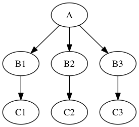

MapNode, iterfield, and iterables explained¶
In this chapter we will try to explain the concepts behind MapNode, iterfield, and iterables.
MapNode and iterfield¶
Imagine that you have a list of items (lets say files) and you want to execute the same node on them (for example some smoothing or masking). Some nodes accept multiple files and do exactly the same thing on them, but some don’t (they expect only one file). MapNode can solve this problem. Imagine you have the following workflow:

Node “A” outputs a list of files, but node “B” accepts only one file. Additionally “C” expects a list of files. What you would like is to run “B” for every file in the output of “A” and collect the results as a list and feed it to “C”. Something like this:

The code to achieve this is quite simple
import nipype.pipeline.engine as pe
a = pe.Node(interface=A(), name="a")
b = pe.MapNode(interface=B(), name="b", iterfield=['in_file'])
c = pe.Node(interface=C(), name="c")
my_workflow = pe.Workflow(name="my_workflow")
my_workflow.connect([(a,b,[('out_files','in_file')]),
(b,c,[('out_file','in_files')])
])
assuming that interfaces “A” and “C” have one input “in_files” and one output “out_files” (both lists of files). Interface “B” has single file input “in_file” and single file output “out_file”.
You probably noticed that you connect nodes as if “B” could accept and output list of files. This is because it is wrapped using MapNode instead of Node. This special version of node will (under the bonnet) create an instance of “B” for every item in the list from the input. The compulsory argument “iterfield” defines which input should it iterate over (for example in single file smooth interface you would like to iterate over input files not the smoothing width). At the end outputs are collected into a list again. In other words this is map and reduce scenario.
You might have also noticed that the iterfield arguments expects a list of input names instead of just one name. This suggests that there can be more than one! Even though a bit confusing this is true. You can specify more than one input to iterate over but the lists that you provide (for all the inputs specified in iterfield) have to have the same length. MapNode will then pair the parameters up and run the first instance with first set of parameters and second with second set of parameters. For example, this code:
b = pe.MapNode(interface=B(), name="b", iterfield=['in_file', 'n'])
b.inputs.in_file = ['file', 'another_file', 'different_file']
b.inputs.n = [1,2,3]
b.run()
is almost the same as running
b1 = pe.Node(interface=B(), name="b1")
b1.inputs.in_file = 'file'
b1.inputs.n = 1
b2 = pe.Node(interface=B(), name="b2")
b2.inputs.in_file = 'another_file'
b2.inputs.n = 2
b3 = pe.Node(interface=B(), name="b3")
b3.inputs.in_file = 'different_file'
b3.inputs.n = 3
It is a rarely used feature, but you can sometimes find it useful.
In more advanced applications it is useful to be able to iterate over items of nested lists (for example [[1,2],[3,4]]). MapNode allows you to do this with the “nested=True” parameter. Outputs will preserve the same nested structure as the inputs.
Iterables¶
Now imagine a different scenario. You have your workflow as before

and there are three possible values of one of the inputs node “B” you would like to investigate (for example width of 2,4, and 6 pixels of a smoothing node). You would like to see how different parameters in node “B” would influence everything that depends on its outputs (node “C” in our example). Therefore the new graph should look like this:

Of course you can do it manually by creating copies of all the nodes for different parameter set, but this can be very time consuming, especially when there are more than one node taking inputs from “B”. Luckily nipype supports this scenario! Its called iterables and and you use it this way:
import nipype.pipeline.engine as pe
a = pe.Node(interface=A(), name="a")
b = pe.Node(interface=B(), name="b")
b.iterables = ("n", [1, 2, 3])
c = pe.Node(interface=C(), name="c")
my_workflow = pe.Workflow(name="my_workflow")
my_workflow.connect([(a,b,[('out_file','in_file')]),
(b,c,[('out_file','in_file')])
])
Assuming that you want to try out values 1, 2, and 3 of input “n” of the node “B”. This will also create three different versions of node “C” - each with inputs from instances of node “C” with different values of “n”.
Additionally, you can set multiple iterables for a node with a list of tuples in the above format.
Iterables are commonly used to execute the same workflow for many subjects. Usually one parametrises DataGrabber node with subject ID. This is achieved by connecting an IdentityInterface in front of DataGrabber. When you set iterables of the IdentityInterface to the list of subjects IDs, the same workflow will be executed for every subject. See fMRI: SPM, FSL to see this pattern in action.